당신의 후원금은
현장에서 어떻게 쓰일까요?
후원금의 86%는 중간 누수 없이
현장으로 직행합니다
10,000원 중 8,600원이
현장 의료 활동에 사용됩니다
현장 의료 물자
모금
운영비
그렇다면 현장으로 전달된 8,600원은
실제로 어떤 물품이 되어 환자들에게 닿을까요?
이 8,600원은 현장에서 무엇이 될까요?
그렇다면 이 물품들이 모인 전장의 병원은 안전할까요?
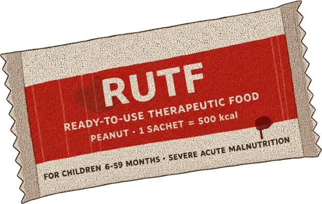
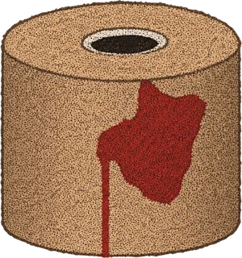
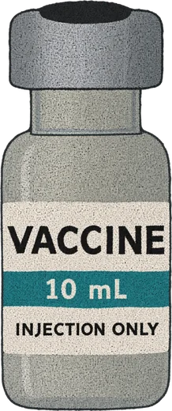
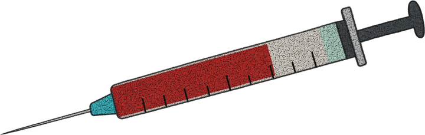

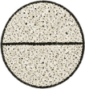

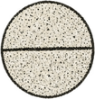


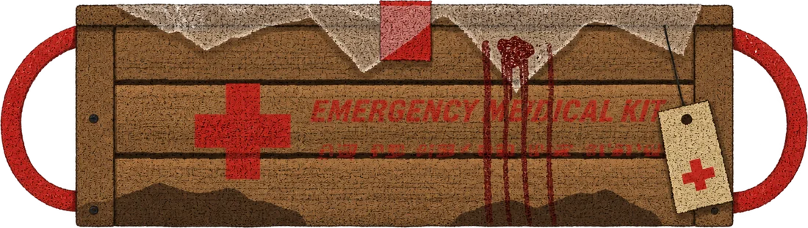
 보호 구역
보호 구역
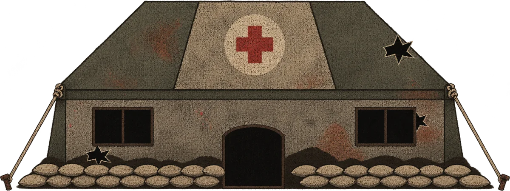
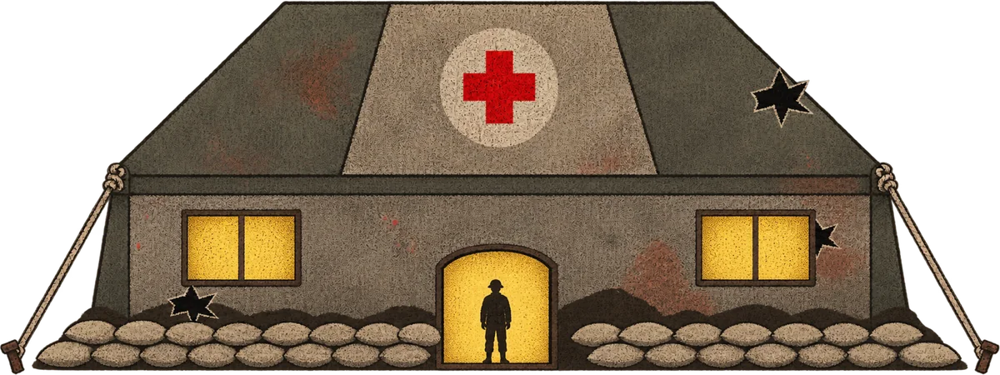
국제법이 약속한 최후의 안전지대
국제법이 약속한 최후의 안전지대
병원은 어떤 상황에서도 공격 대상이 아니다
제네바 제4협약 제18조
민간 병원은 어떠한 상황에서도
공격의 대상이 될 수 없다
이 약속은 현실에서도 지켜지고 있을까요?
오늘 하루, 병원은 몇 번 공격받을까요?
하루 평균 10번, 병원이 공격받습니다
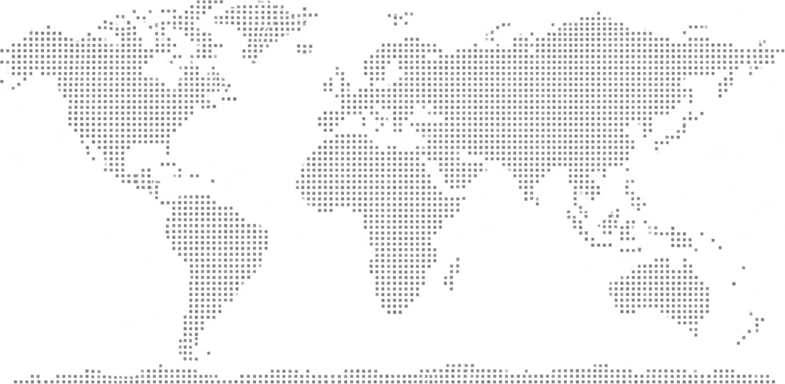
오늘의 의료 공격
0건
하루 10건 → 1년
0건
2024년 전 세계 분쟁 지역 의료 공격
역대 최다
이 수많은 공격은 전쟁 중 우발적 사고였을까요?
※ 하루의 공격 10건은 연간 통계를 하루로 나눈 예시입니다.
출처: Safeguarding Health in Conflict Coalition (2025)
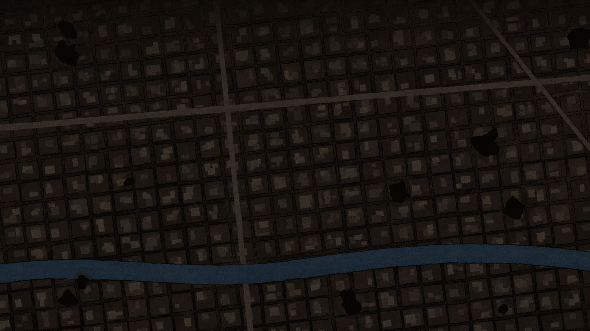
병원은 공격을 피하려고 위치를 미리 알립니다
같은 좌표를 군의 조준경으로 보면
보호 좌표=공습 좌표
탈분쟁화(Deconfliction) 보호 좌표
36°43'N 68°51'E
✓ 군 당국 사전 통보 완료
TARGET ACQUISITION
스캔 중…
조준선이 등록된 좌표로 이동합니다
군에 통보된 보호 좌표
36°43'N 68°51'E
공습 타깃 좌표
36°43'N 68°51'E
100% 일치보호받기 위해 보낸 좌표가
공격의 조준점이 되었습니다
TGT 36°43'N 68°51'E등록된 보호 좌표와 동일
출처: Safeguarding Health in Conflict Coalition (2025)
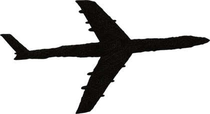
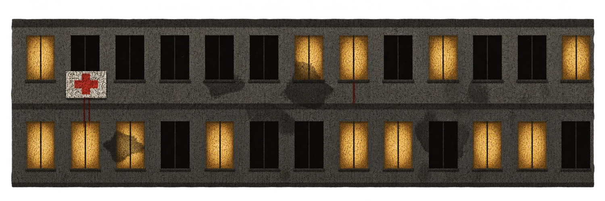
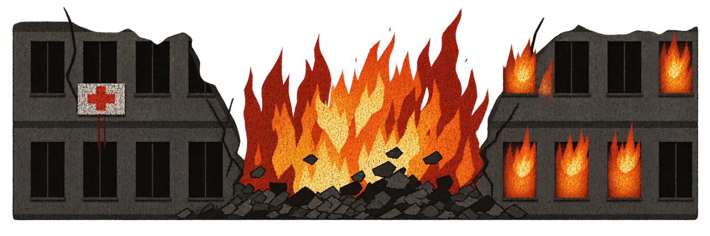
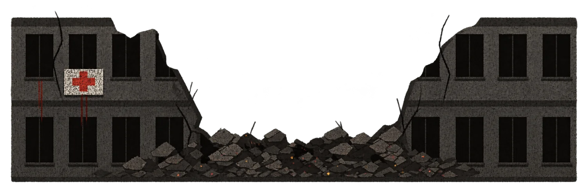
응급실 수술실 중환자실 입원 병동 영상의학·검사실 02:08 첫 공습 · 본관 직격주변 건물은 대부분 남고, 본관만 무너졌다
북동부 유일의 외상센터
새벽 2시 8분, 본관에 첫 포격
멈춰 달라는 연락에도 공격은 계속됐다
약 1시간, 본관만 정확히 무너졌다
남은 것은 비상등 하나
03:10외상센터의 수술실과 중환자실이
멈췄습니다
외상센터의 수술실과 중환자실이 멈췄습니다당신이 보낸 치료식과 백신도
이곳에서 함께 불타 사라졌습니다
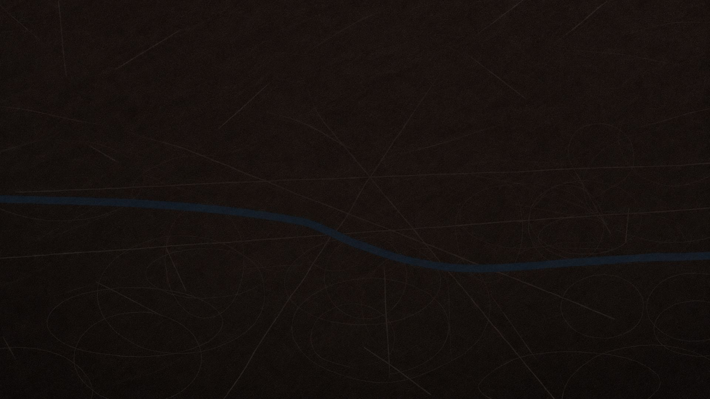
단 하나의 병원이 사라졌을 때
반경 50km, 불이 꺼졌다
금빛 점은 이 병원에 기대던 주변 마을입니다
불 꺼진 마을
0곳
반경 안에 남은 외상센터: 0곳
우리가 보낸 1만 원의 온기가
전장의 표적이 되지 않도록
병원을 의도적으로 공격하는 것은 국제법상 전쟁 범죄입니다.
국제인도법(제네바 협약)을 지키라는 목소리에 함께해 주세요.
함께해 주셔서 고맙습니다. 당신의 온기가 기록되었습니다.
※ 과제용 연출로, 실제 서명은 전송되지 않습니다.
출처: 국경없는의사회(MSF)